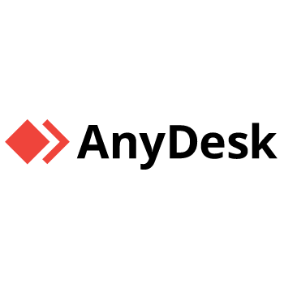
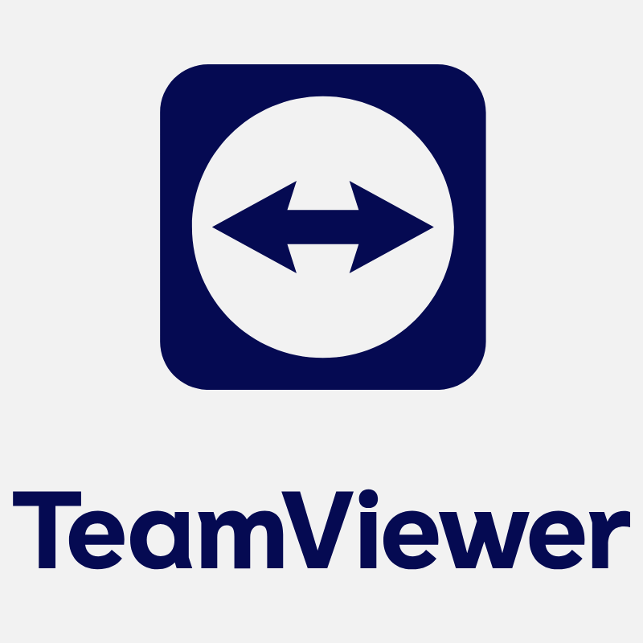

AnyDesk
Es una aplicación de acceso remoto que permite conectarse a otro dispositivo, ver su pantalla y controlarlo con permiso. Se utiliza para asistencia técnica, trabajo a distancia y acceso a equipos.
La conexión remota permite controlar o visualizar un dispositivo desde otro equipo, aunque se encuentren en lugares diferentes. Generalmente se utiliza a través de Internet y con autorización del usuario que recibe la conexión.
Es útil para brindar soporte técnico, solucionar problemas, acceder a archivos o ayudar a otra persona sin estar físicamente frente a su computador.

Es una aplicación de acceso remoto que permite conectarse a otro dispositivo, ver su pantalla y controlarlo con permiso. Se utiliza para asistencia técnica, trabajo a distancia y acceso a equipos.

Es una herramienta que permite acceder y brindar soporte remoto a computadoras y otros dispositivos. Facilita compartir pantalla, controlar equipos y colaborar a distancia con autorización.